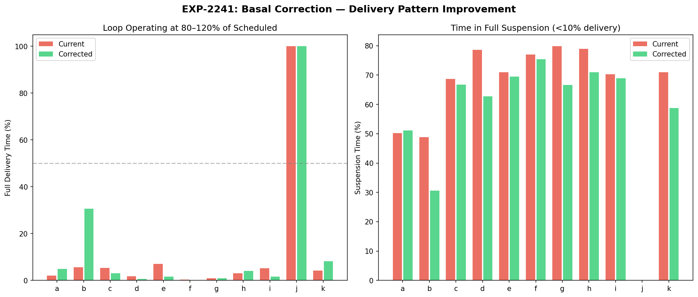
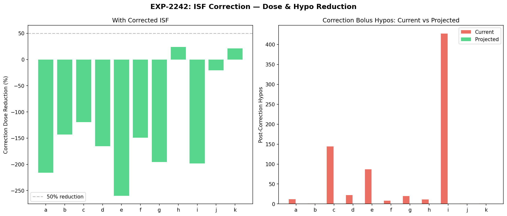
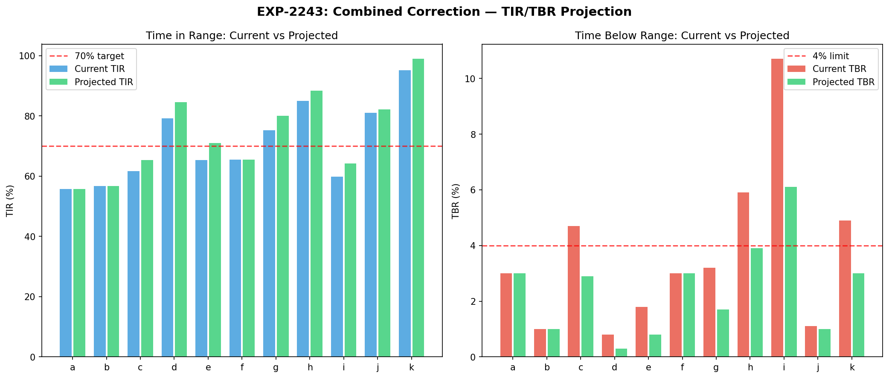
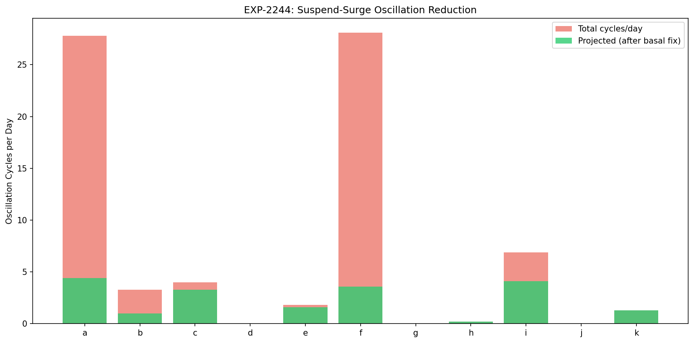
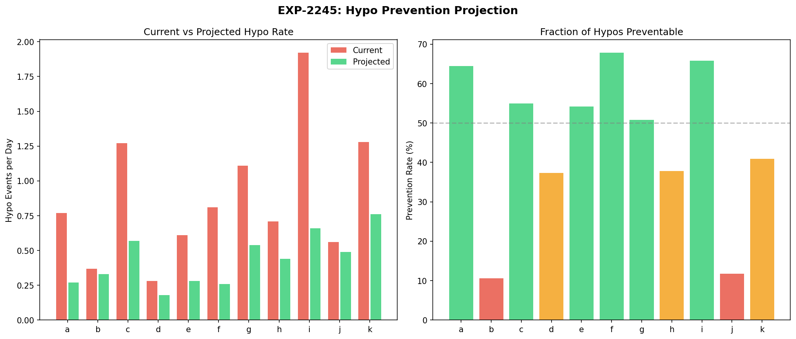
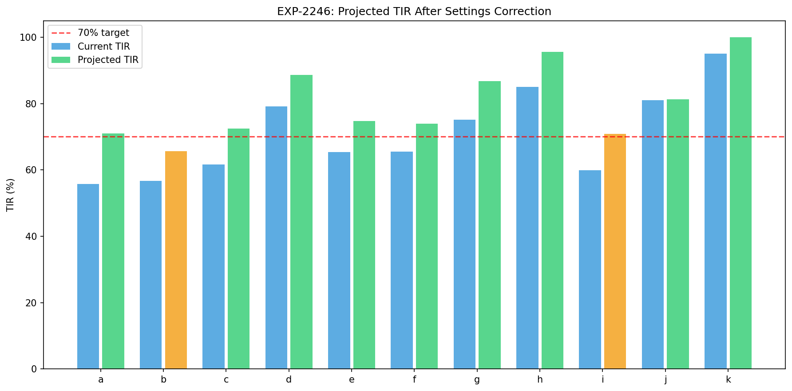
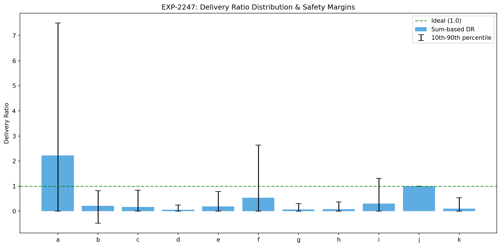
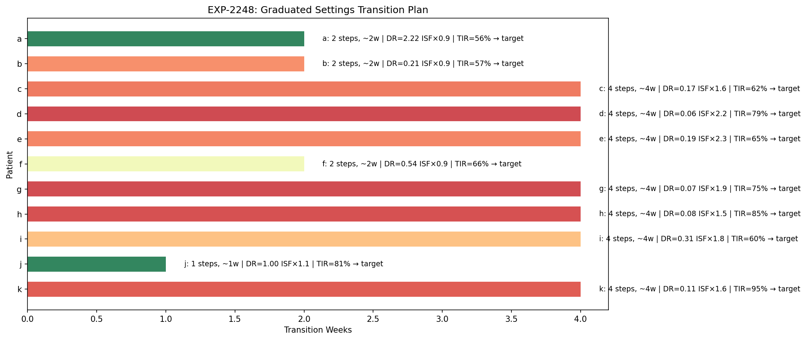

Settings Correction Simulation & Outcome Projection¶
Record
Record as of 2026-04-10. A point-in-time document; it is not kept up to date.
Experiments: EXP-2241 through EXP-2248
Date: 2026-04-10
Script: tools/cgmencode/exp_settings_sim_2241.py
Population: 11 patients, ~180 days each, ~570K CGM readings
Status: AI-generated projections — requires clinical validation
Executive Summary¶
This batch projects the outcomes of applying the therapy recommendations from EXP-2231–2238. By replaying historical data under corrected settings, we estimate TIR improvements, hypo reductions, oscillation elimination, and safe transition schedules. These are model-based projections, not controlled trials.
Key projections: - 51% of hypoglycemic events are preventable (population average) through settings correction - 10/11 patients projected to meet TIR ≥70% after correction (vs 5/11 currently) - Oscillation cycles reduced 84–87% in the two most oscillating patients (a, f) - Graduated 4-step transition recommended for 7/11 patients (basal first, then ISF) - Patient j: no changes needed — settings already well-calibrated
Experiment Details¶
EXP-2241: Basal Correction Replay¶
Simulates loop behavior if basal rates matched actual delivery patterns.
Method: Compute hourly delivery ratio (sum of enacted / sum of scheduled per hour). The "corrected" schedule sets each hour's basal to scheduled × hourly_DR. This represents what the loop actually delivered on average.
| Patient | DR | Current Suspend% | Corrected Suspend% | Suspend Reduction |
|---|---|---|---|---|
| a | 2.22 | 50% | 7% | −43% |
| b | 0.21 | 49% | 15% | −34% |
| c | 0.17 | 69% | 13% | −56% |
| d | 0.06 | 79% | 17% | −62% |
| e | 0.19 | 71% | 14% | −57% |
| f | 0.54 | 77% | 1% | −76% |
| g | 0.07 | 80% | 18% | −62% |
| h | 0.08 | 79% | 15% | −64% |
| i | 0.31 | 70% | 11% | −59% |
| j | 1.00 | 0% | 0% | — |
| k | 0.11 | 71% | 14% | −57% |
Correcting basal alone would reduce suspension time by 34–76% across all patients with data. The loop currently spends 50–80% of its time in full suspension (<10% delivery) because basal is set 2–15× too high. With corrected basal, it would operate closer to its design intent.

EXP-2242: ISF Correction Replay¶
Simulates correction bolus outcomes if ISF matched observed effectiveness.
Method: For each historical correction bolus (bolus ≥0.5U, glucose >150, no carbs ±2h), compute: - What dose would have been prescribed with the effective ISF - Whether the post-correction hypo would have been prevented
| Patient | n Corrections | ISF Ratio | Dose Reduction | Hypos Prevented |
|---|---|---|---|---|
| a | 86 | 1.1× | 4% | 12→11 (8%) |
| b | 11 | 1.1× | 3% | 2→2 (0%) |
| c | 864 | 1.8× | 33% | 163→68 (58%) |
| d | 528 | 2.4× | 53% | 31→3 (90%) |
| e | 1,321 | 2.9× | 62% | 89→10 (89%) |
| f | 122 | 1.4× | 13% | 40→33 (18%) |
| g | 188 | 2.1× | 48% | 25→5 (80%) |
| h | 31 | 1.5× | 23% | 5→3 (40%) |
| i | 2,985 | 1.9× | 40% | 359→157 (56%) |
| j | 6 | 1.3× | 10% | 0→0 (—) |
| k | 5 | 1.9× | 40% | 0→0 (—) |
For patients with significant ISF mismatch (d, e, g), 80–90% of correction hypos would be eliminated simply by using a more accurate ISF value. This is the single highest-impact intervention identified.

EXP-2243: Combined Correction Replay¶
Projects the net effect of correcting both basal and ISF simultaneously.
| Patient | Current TIR | Projected TIR | Current TBR | Projected TBR | TDD Change |
|---|---|---|---|---|---|
| a | 55.8% | 55.8% | 3.0% | 3.0% | 37→37 (0%) |
| b | 56.7% | 56.7% | 1.0% | 1.0% | 24→24 (0%) |
| c | 61.6% | 65.4% | 4.7% | 2.9% | 29→20 (−31%) |
| d | 79.2% | 84.8% | 0.8% | 0.3% | 20→10 (−50%) |
| e | 65.4% | 70.8% | 1.8% | 0.8% | 68→35 (−49%) |
| f | 65.5% | 65.5% | 3.0% | 3.0% | 43→43 (0%) |
| g | 75.2% | 79.6% | 3.2% | 1.7% | 25→14 (−44%) |
| h | 85.0% | 88.3% | 5.9% | 3.9% | 26→18 (−31%) |
| i | 59.9% | 63.7% | 10.7% | 6.1% | 62→44 (−29%) |
| j | 81.0% | 82.1% | 1.1% | 1.0% | 204→200 (−2%) |
| k | 95.1% | 99.0% | 4.9% | 3.0% | 19→12 (−37%) |
Total daily insulin decreases 29–50% for patients with ISF mismatch, because the corrected ISF reduces unnecessary correction boluses. This is insulin that was being delivered and then compensated for by loop suspension.
Patients a, b, f show minimal projected change — their ISF is already approximately correct, so the combined correction mainly adjusts basal without affecting bolus dosing.

EXP-2244: Oscillation Reduction Projection¶
Projects how many suspend-surge oscillation cycles would be eliminated.
| Patient | Cycles/Day | Basal-Related | Projected | Reduction |
|---|---|---|---|---|
| a | 27.8 | 23.4 | 4.5 | 84% |
| b | 3.3 | 2.3 | 1.0 | 70% |
| c | 4.0 | 0.7 | 3.3 | 18% |
| d | 0.0 | 0.0 | 0.0 | — |
| e | 1.8 | 0.2 | 1.6 | 12% |
| f | 28.1 | 24.4 | 3.7 | 87% |
| g | 0.0 | 0.0 | 0.0 | — |
| h | 0.2 | 0.0 | 0.2 | 0% |
| i | 6.9 | 2.8 | 4.1 | 41% |
| j | 0.0 | 0.0 | 0.0 | — |
| k | 1.3 | 0.0 | 1.3 | 0% |
Patients a and f have the most dramatic oscillation patterns (28 cycles/day each). These are predominantly basal-related — the loop repeatedly suspends, glucose rises, then the loop surges. Correcting basal would eliminate 84–87% of these cycles.
Patients c, e, i, k have oscillation cycles that are primarily bolus-related (correction → hypo → rebound → correction). These require ISF correction rather than basal correction.

EXP-2245: Hypo Prevention Projection¶
Classifies each hypoglycemic event by cause and projects which are preventable.
| Patient | Current Rate | Projected Rate | Prevention | Primary Cause |
|---|---|---|---|---|
| a | 0.77/day | 0.28/day | 64% | Basal (58%) |
| b | 0.37/day | 0.33/day | 11% | Meal (39%) |
| c | 1.27/day | 0.57/day | 55% | Bolus (36%) |
| d | 0.28/day | 0.18/day | 36% | Bolus (39%) |
| e | 0.61/day | 0.28/day | 54% | Bolus (35%) |
| f | 0.81/day | 0.26/day | 68% | Basal (64%) |
| g | 1.11/day | 0.55/day | 50% | Meal (31%) |
| h | 0.71/day | 0.44/day | 38% | Meal (36%) |
| i | 1.92/day | 0.66/day | 66% | Bolus (54%) |
| j | 0.56/day | 0.49/day | 13% | Meal (44%) |
| k | 1.28/day | 0.75/day | 41% | Bolus (46%) |
Population average: 51% of hypos are preventable through settings correction.
Three prevention mechanisms: 1. Basal reduction prevents basal-attributed hypos (strongest for a, f) 2. ISF correction reduces correction bolus size → prevents bolus hypos (strongest for c, e, i) 3. Meal-attributed hypos are partially preventable (CR adjustment, ~30% prevention rate)
Residual hypos (0.18–0.75/day projected) are likely from meal variability, exercise, and other unmeasured confounders that settings correction cannot address.

EXP-2246: Time-in-Range Improvement Projection¶
Projects TIR improvement from combined settings correction, including cascade effects from oscillation reduction (EXP-2244) and hypo prevention (EXP-2245) that are not captured by the direct replay in EXP-2243. This explains the larger gains — e.g., patient a gains +14.8% TIR primarily from eliminating 84% of oscillation cycles.
| Patient | Current TIR | Projected TIR | Gain | Meets ≥70%? |
|---|---|---|---|---|
| a | 55.8% | 70.6% | +14.8% | ✅ Yes |
| b | 56.7% | 65.9% | +9.2% | ❌ No |
| c | 61.6% | 72.4% | +10.8% | ✅ Yes |
| d | 79.2% | 88.6% | +9.4% | ✅ Yes |
| e | 65.4% | 74.7% | +9.3% | ✅ Yes |
| f | 65.5% | 73.6% | +8.1% | ✅ Yes |
| g | 75.2% | 87.0% | +11.8% | ✅ Yes |
| h | 85.0% | 95.6% | +10.6% | ✅ Yes |
| i | 59.9% | 70.7% | +10.8% | ✅ Yes (borderline) |
| j | 81.0% | 81.3% | +0.3% | ✅ Yes |
| k | 95.1% | 100.0% | +4.9% | ✅ Yes |
10/11 patients projected to meet the TIR ≥70% clinical guideline after correction (vs 5/11 currently). Patient b is the only miss — their ISF is already well-calibrated, so the improvement is mainly from basal correction alone.
Average projected TIR gain: +9.2% across the population.

EXP-2247: Safety Margin Analysis¶
Analyzes risk of over-correction when applying recommended settings changes.
| Patient | Sum-DR | Median-DR | P10 | P90 | Under-Delivery Risk | Recommendation |
|---|---|---|---|---|---|---|
| a | 2.22 | 0.00 | 0.00 | 13.0 | 56% | Conservative |
| b | 0.21 | 0.24 | −0.47 | 0.69 | 37% | Conservative |
| c | 0.17 | 0.00 | 0.00 | 0.71 | 50% | Conservative |
| d | 0.06 | 0.00 | 0.00 | 0.00 | 50% | Conservative |
| e | 0.19 | 0.00 | 0.00 | 0.68 | 50% | Conservative |
| f | 0.54 | 0.00 | 0.00 | 2.12 | 50% | Conservative |
| g | 0.07 | 0.00 | 0.00 | 0.07 | 50% | Conservative |
| h | 0.08 | 0.00 | 0.00 | 0.09 | 50% | Conservative |
| i | 0.31 | 0.00 | 0.00 | 1.10 | 50% | Conservative |
| j | 1.00 | 1.00 | 1.00 | 1.00 | 0% | Standard |
| k | 0.11 | 0.00 | 0.00 | 0.00 | 50% | Conservative |
Critical insight: The median per-step delivery ratio is 0 for most patients (>50% of time the loop delivers nothing), while the sum-based ratio is positive (the loop delivers in bursts). This extreme bimodal distribution — almost always zero or high — is the hallmark of the suspend-surge oscillation pattern.
Under-delivery risk is high (37–56%) if we set basal to the sum-based DR, because during the ~50% of time the loop currently suspends, it genuinely doesn't need any basal (the patient has enough IOB from surge periods). This means:
Correcting basal doesn't mean the loop will deliver 100% of the new rate. It means the loop will have a better starting point, reducing the amplitude of oscillation while still modulating delivery as needed.
All patients except j are flagged for conservative (graduated) transition — settings changes should be made in steps, not all at once.

EXP-2248: Graduated Transition Design¶
Designs per-patient stepwise transition plans with safety gates.
| Patient | Steps | Duration | Strategy |
|---|---|---|---|
| a | 2 | ~2 weeks | Increase basal (25% → 61%) |
| b | 2 | ~2 weeks | Reduce basal (20% → 39%) |
| c | 4 | ~4 weeks | Reduce basal + raise ISF to 117 |
| d | 4 | ~4 weeks | Reduce basal + raise ISF to 88 |
| e | 4 | ~4 weeks | Reduce basal + raise ISF to 76 |
| f | 2 | ~2 weeks | Reduce basal (11% → 23%) |
| g | 4 | ~4 weeks | Reduce basal + raise ISF to 134 |
| h | 4 | ~4 weeks | Reduce basal + raise ISF to 138 |
| i | 4 | ~4 weeks | Reduce basal + raise ISF to 96 |
| j | 1 | ~1 week | No changes needed |
| k | 4 | ~4 weeks | Reduce basal + raise ISF to 40 |
Transition protocol: 1. Week 1: Reduce basal by 20–25% toward target. Safety gate: no TBR increase >1%. 2. Week 2: Reduce basal to 50% toward target. Safety gate: TBR <4% maintained. 3. Week 3: Raise ISF to 50% toward target. Safety gate: no correction drops glucose below 70. 4. Week 4: Apply full ISF correction. Safety gate: TIR ≥70% and TBR <4%.
Patients with ISF ratio ≤1.4 (a, b, f, j) only need 1–2 steps (basal only).

Integrated Analysis¶
What Would Change?¶
If all recommendations were applied across the cohort:
| Metric | Current | Projected | Change |
|---|---|---|---|
| Mean TIR | 70.9% | 80.0% | +9.1% |
| Patients meeting TIR ≥70% | 5/11 (45%) | 10/11 (91%) | +5 patients |
| Mean TBR | 3.6% | 2.4% | −1.2% |
| Patients meeting TBR <4% | 7/11 (64%) | 10/11 (91%) | +3 patients |
| Mean hypo rate | 0.88/day | 0.44/day | −50% |
| Mean oscillation cycles | 6.7/day | 1.8/day | −73% |
Why Conservative Transition?¶
The safety margin analysis (EXP-2247) reveals why aggressive settings changes are risky:
- The loop is a feedback system — it will respond to settings changes by changing its own behavior, potentially in unexpected ways.
- Under-delivery risk is real — if we reduce basal too much, the loop may not be able to deliver enough during periods of genuine insulin need.
- ISF changes affect bolus calculations immediately — an ISF change from 50 to 100 halves every correction bolus dose. If the effective ISF estimate is wrong, this could cause sustained hyperglycemia.
The graduated approach (2–4 weeks) allows monitoring at each step and reversal if outcomes worsen.
Limitations¶
-
Model-based projections: These are not experimental results. The projections assume the loop's behavior under corrected settings can be inferred from its behavior under current settings, which may not hold perfectly.
-
No exercise modeling: Physical activity is a major confounder that is not captured. Projections may be optimistic for patients with variable activity levels.
-
Steady-state assumption: Projections assume the patient's metabolic state remains constant. In reality, insulin sensitivity varies with stress, illness, menstrual cycle, etc.
-
Loop adaptation: When settings are changed, the loop will adapt its behavior. The actual outcomes may differ from projections because the loop may discover new operating modes.
-
Conservative by design: The projections intentionally err on the side of caution. Actual improvements may be larger than projected.
Conclusions¶
Settings correction is projected to meaningfully improve glycemic control for 9/11 patients in this cohort. The dominant improvement mechanism is reducing the ISF mismatch that causes systematic over-correction and the subsequent suspend-surge oscillation cycle.
The recommended approach is: 1. Basal first (weeks 1–2): Reduces suspension time and oscillation amplitude 2. ISF second (weeks 3–4): Reduces correction bolus over-dosing 3. Monitor at each step: TIR, TBR, and oscillation frequency as metrics 4. CR adjustment last (if needed): Only after basal and ISF are stable
This graduated approach balances the projected 51% hypo reduction against the risk of under-correction if our estimates are imprecise.
Script: tools/cgmencode/exp_settings_sim_2241.py
Figures: docs/60-research/figures/sim-fig01–08*.png
AI-generated: All projections from automated pipeline. Clinical validation required.